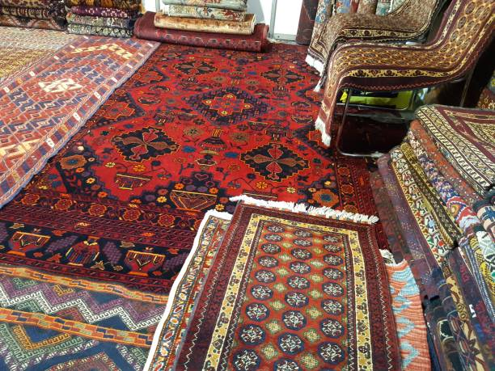

ACTED is a non-governmental organization that has been working in Afghanistan since 1993 to provide
humanitarian and development assistance. In Jawzjan province, specifically, ACTED has focused on
projects like supporting women in agriculture to improve food security and income, and has also been
part of a larger regional program that supports communities in provinces including Jawzjan through
initiatives like the Sustained Rural Development Program.
ACTED provides education and vocational training for marginalized girls and youth in Afghanistan,
including remote areas such as Faryab, Jowzjan, and several other provinces. They help address
poverty and cultural barriers and empower women by creating safe learning environments,
developing skills, and promoting economic independence.
Afghanistan's carpet industry is an important, millennia-old tradition and one of the country’s
main export sectors, employing over a million people, mostly rural women. The industry is known
for its vibrant colors, intricate designs such as the “elephant’s foot,” and high-quality
natural materials. Despite challenges like poverty, market competition, and restrictions on
women, efforts continue to increase production and supply for global markets, especially China.
The right time for the right place – Agriculture is central to Afghanistan's economy, employing
most of the population and contributing significantly to its GDP, though it is highly vulnerable
to climate change and conflict. Key sub-sectors include cereals (especially wheat), livestock
(cattle, sheep, and poultry), and horticulture (fruits, nuts, and vegetables). There are
opportunities to increase production and create jobs through investments in these areas,
particularly in irrigated and peri-urban regions.
Engineers in Afghanistan, especially in Kabul, work on infrastructure, IT, telecommunications,
solar, and software projects with UN/NGOs and local companies, including ACTED. Opportunities
exist in civil, IT, software, and construction engineering, focusing on national development and
reconstruction, with salaries varying by sector and role.
My name is Ahmad Bashir Omari. I am a hardworking and motivated individual who enjoys learning,
teaching,
and creating. I focus on improving my skills every day and helping others succeed. I always aim to
deliver quality work and build strong, positive relationships.
My name is Abdul Baset. I am a hardworking and motivated individual who enjoys learning,
teaching,
and creating. I focus on improving my skills every day and helping others succeed. I always aim to
deliver quality work and build strong, positive relationships.
My name is Timor. I am a hardworking and motivated individual who enjoys learning,
teaching,
and creating. I focus on improving my skills every day and helping others succeed. I always aim to
deliver quality work and build strong, positive relationships.
My name is Shir Ahmad. I am a hardworking and motivated individual who enjoys learning,
teaching,
and creating. I focus on improving my skills every day and helping others succeed. I always aim to
deliver quality work and build strong, positive relationships.
WEB DEVELOPMENT
HTML
HTML (HyperText Markup Language) is the standard language used to create and structure content on the
web. It acts as the skeleton of a webpage, using tags to define elements like text, images, and
links. HTML is based on hypertext (connecting pages through links) and markup (using tags to
describe structure). Each element includes a start tag, content, and an end tag—except for
self-closing tags like or Attributes inside tags provide extra information, such as image sources or
link destinations.
CSS
CSS (Cascading Style Sheets) is a styling language used to control the visual appearance of web pages
by defining colors, fonts, layouts, spacing, and animations. While HTML provides the structure of a
webpage, CSS makes it look attractive and organized by applying design rules through selectors. It
allows developers to create responsive designs that work on all devices, and it is essential for
building modern, visually appealing websites.
JAVASCRIPT
JavaScript (JS) is a high-level programming language that brings interactivity and dynamic behavior
to websites. It allows web pages to respond to user actions, update content without reloading,
create animations, validate forms, and build modern web applications. JavaScript works directly
inside the browser and can also run on servers through Node.js, making it one of the most important
and widely used languages in web development.
NODE.JS
Node.js is an open-source, cross-platform JavaScript runtime environment that allows developers to
run JavaScript outside the browser, mainly on the server side. Built on Google Chrome’s
high-performance V8 engine, it uses an event-driven, non-blocking architecture that makes it
extremely fast and efficient for handling many simultaneous requests. With access to npm (Node
Package Manager), Node.js supports millions of reusable packages, making it ideal for building APIs,
real-time applications like chats, streaming services, and scalable backend systems.
A website is a collection of connected web pages stored on a web server and accessed through a domain
name via an internet browser. Its main components include web pages (HTML documents), a domain name
(site address), web hosting (where files are stored), a URL (specific page address), a homepage (main
starting page), navigation menus, and content such as text, images, and videos. Websites can be static
with fixed content or dynamic with content that updates based on user actions or databases. They also
come in different types, including e-commerce sites, blogs, social media platforms, informational sites,
portfolios, and business websites. When a user enters a URL, the browser sends a request to the server,
the server processes it and returns the files, and the browser displays the website.
AI
Artificial Intelligence (AI) is a field of computer science that focuses on creating machines capable
of performing tasks that normally require human intelligence, such as learning, understanding
language, recognizing images, and making decisions. AI works by using large amounts of data,
algorithms, and techniques like machine learning and deep learning to identify patterns and improve
its performance over time. It is used in many areas of everyday life, including voice assistants,
recommendation systems, healthcare, finance, and self-driving cars, making processes faster,
smarter, and more efficient while transforming industries worldwide.
AI
Artificial Intelligence (AI) is a branch of computer science dedicated to building systems that can
think and act like humans, performing tasks such as learning from experience, understanding
language, analyzing images, and making decisions. By processing large amounts of data with advanced
algorithms and methods like machine learning and deep learning, AI continually improves its accuracy
and capabilities. Today, AI powers many everyday technologies—such as digital assistants,
personalized recommendations, medical diagnostics, financial analysis, and autonomous
vehicles—helping make modern life more efficient, intelligent, and highly automated.
Computer
computer is an electronic device that processes, stores, and manages information, allowing users to
perform a wide range of tasks such as typing documents, browsing the internet, creating software,
managing data, and communicating with others. It works by using hardware components like the CPU,
memory, storage, and input/output devices, along with software such as operating systems and
applications that control how the computer operates. Computers are used in almost every part of
modern life—including education, business, healthcare, banking, and entertainment—making work
faster, more accurate, and more organized while helping people store, analyze, and share information
efficiently.
Computer-Addvance
Advanced computer knowledge focuses on understanding how computers work beyond basic use. It includes
learning about hardware (CPU, RAM, storage, motherboard), operating systems (Windows, Linux, macOS),
networking, databases, cybersecurity, and advanced software tools. It also involves skills like
troubleshooting system problems, installing and configuring software, managing files and storage
devices, using command-line tools, understanding computer architecture, and working with cloud
technologies. Advanced computer skills are essential for fields like IT support, programming,
graphic design, web development, and data management.
Artificial Intelligence is an advanced branch of computer science that focuses on developing intelligent
systems capable of performing complex tasks that normally require human cognitive abilities, including
learning from experience, logical reasoning, decision-making, problem-solving, natural language
understanding, and visual perception. These systems function by processing large and diverse datasets
through sophisticated algorithms, machine learning techniques, and computational models that enable them
to recognize patterns, adapt to new information, and continuously improve their performance. Artificial
Intelligence is extensively used in modern applications such as autonomous systems, intelligent
software, robotics, data analytics, cybersecurity, healthcare diagnostics, financial forecasting, and
decision-support systems, where it enhances nacross a wide .
ENGLISH CLASS ROOM
English is a widely used international language that serves as a primary means of communication in
education, business, science, technology, diplomacy, and global media. It originated in England and
has developed over centuries through the influence of Germanic, Latin, and Romance languages. Today,
English is spoken as a first or second language by millions of people worldwide and is recognized as
the main language of international communication. Its standardized grammar, extensive vocabulary,
and global acceptance make English an essential language for academic study, professional
development, and cross-cultural interaction in the modern world.
English is a global language used as a primary means of communication in education, business,
science, technology, and international relations. It originated in England and has evolved through
historical influences from Germanic, Latin, and French languages. English is widely spoken as a
first or second language across the world and is the dominant language of the internet, academic
research, and global media. Learning English improves access to education, professional
opportunities, and international communication.
English Grammar
English grammar is the system of rules that governs how words are formed and combined to create
meaningful sentences. It includes key components such as parts of speech (nouns, pronouns, verbs,
adjectives, adverbs, prepositions, conjunctions, and interjections), sentence structure, verb
tenses, subject-verb agreement, articles, and punctuation. Proper grammar ensures clarity, accuracy,
and effectiveness in both written and spoken communication. Mastery of English grammar is essential
for academic writing, professional correspondence, and fluent communication.
English is a global language used widely in education, business, science, technology, travel, and
international communication, making it one of the most important languages in the world. It enables
people from different cultures and countries to exchange information and work together effectively, and
it is the primary language of the internet, global media, and academic research. English grammar
provides the structural rules of the language, including word formation, sentence structure, verb
tenses, agreement, and punctuation, which help convey meaning accurately and clearly. A strong
understanding of English and its grammar improves communication skills, enhances reading comprehension
and writing ability, and supports success in public, academic, and professional environments.
GRAPHIC-DESIGN
PHOTOSHOP
Adobe Photoshop is a professional graphic design and image-editing software developed by Adobe
Systems and widely used in creative industries around the world. It allows users to edit, enhance,
and manipulate digital images using powerful tools such as layers, masks, filters, brushes, and
color-correction features. Photoshop is commonly used for photo retouching, graphic design, web
design, social media content creation, digital art, and advertising. It supports various file
formats and integrates seamlessly with other Adobe applications, making it an essential tool for
designers, photographers, and digital artists to create high-quality visual content with precision
and creativity.
ANIMATION
Animation is a creative process that brings images, drawings, or digital objects to life by
displaying them in a rapid sequence to create the illusion of movement. It can be created using
traditional hand-drawn techniques, stop-motion methods, or modern computer-generated imagery (CGI).
Animation is widely used in films, television, video games, advertising, education, and digital
media to tell stories, explain ideas, and entertain audiences. Modern animation relies on
specialized software and tools to design characters, create motion, add sound and visual effects,
and produce realistic or stylized visuals. As a powerful form of visual communication, animation
enhances creativity,.
LOGO-DESIGN
A logo is a visual symbol or graphic mark that represents a brand, company, organization, or product
and helps distinguish it from others. It is a key element of brand identity and is designed to
communicate a brand’s values, message, and personality in a simple and memorable way. Logos can be
created using text (wordmarks), symbols (icons), or a combination of both, and they are used across
various platforms such as websites, social media, packaging, advertising, and printed materials.
Effective logo design focuses on simplicity, clarity, originality, and scalability, ensuring that
the logo looks professional and recognizable at any size or medium.
MORE INFORMATION ABOUT GRAPHIC-DESIGN
Graphic design is a creative discipline that focuses on visual communication, using elements such as
typography, color, images, symbols, and layout to convey messages clearly and effectively. It is widely
used in branding, advertising, marketing, digital media, publishing, and user interface design to
inform, persuade, and engage audiences. Graphic designers are professionals who apply design principles
and creativity to develop visual solutions for both print and digital platforms, including logos,
posters, websites, social media content, packaging, and corporate identity materials. They work with
design software such as Adobe Photoshop, Illustrator, and InDesign, and collaborate with clients and
teams to translate ideas and concepts into visually compelling designs that strengthen brand identity
and enhance communication.
BUSINESS

Carpet
Aqcha carpets are traditional hand-knotted rugs from Aqcha District in Jowzjan Province, northern
Afghanistan, primarily woven by Turkmen and Uzbek artisans. Known for their deep red colors,
geometric Göl motifs, and strong contrasting borders, these carpets are made from 100% wool with
cotton foundations and dyed using natural, long-lasting colors. Each rug is individually knotted,
making them durable, high-quality, and unique, often used as floor coverings, prayer rugs, or
decorative pieces. Aqcha carpets reflect centuries-old Afghan weaving traditions, are highly valued
in international markets, and continue to support local communities while preserving the region’s
cultural heritage.
Sesame Sweet
Sesame Sweet is a traditional and popular sweet in Afghanistan, especially in northern
provinces such as Balkh, Jowzjan, and Mazar-e-Sharif, where sesame seeds are widely grown. It is
usually made from roasted sesame seeds or sesame paste mixed with sugar or honey, and sometimes
flavored with cardamom or combined with nuts. Afghan sesame sweet is valued not only for its rich
taste but also for its high nutritional value, as it provides energy, healthy oils, protein,
calcium, and iron. It is commonly eaten with bread and tea, particularly in winter, and is sold in
local bazaars as a homemade or locally produced traditional food.
Cotton
Cotton in Afghanistan is an important agricultural crop that supports hundreds of thousands of
farmers and contributes to both domestic industry and export earnings. In recent years, cotton
production has grown significantly, with around 159,000 metric tons harvested across about 105,000
hectares in 2024, marking a 30% increase compared to the previous year, and cultivated in many
provinces including Helmand, Balkh, Kandahar, Jowzjan, and Nangarhar.
SALAM WATANDAR - Farsi
The crop has gained importance as farmers increasingly grow cotton instead of poppy following its
nationwide ban, and it’s used for textiles, cottonseed oil, and other products.
More Information
In Afghanistan, cotton, sesame sweet, and carpets are essential traditional products that strongly support
the country’s agriculture, food culture, and handicraft economy. Cotton is widely cultivated in fertile
regions such as Balkh, Jowzjan, Helmand, Kandahar, and Nangarhar, where it is used for clothing, bedding,
medical supplies, cottonseed oil, and as the strong warp and weft threads that form the foundation of Afghan
handmade carpets, ensuring durability and long life. Sesame sweet (sesame halva) is a well-known traditional
food made from locally grown sesame seeds mixed with sugar or honey; it is rich in energy, healthy oils,
protein, calcium, and iron, and is commonly eaten with bread and tea, particularly during winter and
religious or family gatherings. Afghan carpets, handwoven using centuries-old techniques, usually combine
cotton bases with high-quality wool piles and natural dyes, feature symbolic geometric and floral designs
that represent regional identity, and play a major role in providing employment, preserving cultural
heritage, and generating income through domestic sales and exports, making these three products deeply
interconnected and vital to Afghanistan’s traditional economy and daily life.
ENGINEER
Building-Engineer
A Building Engineer is a professional responsible for the design, construction, operation, and
maintenance of buildings to ensure they are safe, efficient, and functional. Building engineers work
with structural systems, electrical wiring, plumbing, heating, ventilation, air-conditioning (HVAC),
fire safety, and energy management, often coordinating with architects, civil engineers, and
contractors. Their role includes planning new buildings, supervising construction, inspecting
materials and workmanship, solving technical problems, and maintaining existing structures to meet
safety codes and sustainability standards. In many countries, including Afghanistan, building
engineers play a vital role in urban development, housing projects, commercial buildings, and
infrastructure, helping improve living conditions and supporting economic growth.
Maps-Engineer
A Maps Engineer (also known as a Mapping Engineer, Geospatial Engineer, or GIS Engineer) is a
professional who specializes in creating, analyzing, and managing maps and geographic data using
advanced technology. Maps engineers work with Geographic Information Systems (GIS), GPS, satellite
imagery, aerial photography, and surveying data to produce accurate digital and physical maps for
planning and decision-making. Their work supports many fields such as urban planning, construction,
transportation, environmental management, disaster response, land administration, and navigation
systems. A maps engineer collects spatial data in the field, processes and analyzes it on computers,
ensures accuracy and updates, and presents information in map form that helps governments,
engineers, and organizations understand terrain, boundaries, infrastructure, and natural resources.
Electronic-Engineer
An Electronic Engineer (also called an Electronics Engineer) is a professional who designs, develops,
tests, and maintains electronic systems and devices that use electrical signals and components. They
work with circuits, microcontrollers, semiconductors, sensors, communication systems, and embedded
hardware, and their work is essential in products such as mobile phones, computers, medical
equipment, industrial machines, power control systems, and telecommunications networks. Electronic
engineers analyze technical problems, create circuit designs, test prototypes, ensure safety and
efficiency, and improve existing electronic systems using mathematics, physics, and engineering
principles. They are employed in many industries including telecommunications, manufacturing,
automation, renewable energy, defense, and consumer electronics, and their work plays.
More Information-About-Engineer
Electronic Engineers, Maps Engineers, and Building Engineers are three important engineering professions
that contribute to modern development and infrastructure. An Electronic Engineer designs, develops, and
maintains electronic circuits, devices, and systems such as communication equipment, computers, control
systems, medical devices, and automation technologies, using knowledge of electronics, physics, and
programming to improve efficiency and innovation. A Maps Engineer (also called a GIS or Geospatial Engineer)
specializes in collecting, analyzing, and managing geographic data using GIS software, GPS, satellite
images, and surveying tools to create accurate maps that support urban planning, construction,
transportation, land management, and disaster response. A Building Engineer focuses on the design,
construction, operation, and maintenance of buildings, ensuring structural safety, electrical and mechanical
systems efficiency, fire protection, and compliance with engineering standards, while working closely with
architects and contractors. Together, these engineers play a vital role in technological progress, safe
construction, smart planning, and improving quality of life.
AGRICULTURE
Grap
Grapes are an important crop in Aqcha, Jawzjan province, northern Afghanistan, where they are grown
by many local farmers using mostly traditional methods. The region produces both fresh grapes and
raisins, which are harvested in late summer and early autumn, providing significant income for rural
families. Raisin production helps reduce post-harvest losses and allows farmers to sell their
produce at higher value, while women often participate in vineyard care, harvesting, and drying.
Despite challenges like water scarcity and reliance on traditional irrigation, local programs and
small infrastructure projects have supported farmers with training in grape cultivation, processing,
and storage, improving quality and market opportunities for this vital agricultural product.
Butcher
In Aqcha district of Jawzjan province, Afghanistan, the role of a butcher (قصاب) is tied closely to
local livestock and meat supply, and traditionally butchers buy animals from livestock markets or
directly from herders, slaughter them, and sell fresh meat to the community, often using basic tools
and methods with limited formal infrastructure or regulation. Recently, local authorities began
building a proper slaughterhouse (killing/processing facility) in Aqcha to improve hygiene, prevent
unsafe home slaughtering, and ensure healthier, inspected meat for sale, which reflects efforts to
standardize meat processing and reduce health risks from casual slaughter practices. However, some
local butchers have expressed concerns that moving to a centralized facility increases transport
costs and work compared with traditional home slaughtering.
Grap
In Aqcha, Jawzjan province (northern Afghanistan), melons are a major seasonal crop that farmers grow
extensively on irrigated land and harvest in the summer–early autumn, providing both food and income
for local communities; Jawzjan alone produced over 116,000 tonnes of melons in a recent season, but
many growers struggle with low market prices and limited buyers, which can make it hard to recoup
their costs. Melons from this region are known for their sweetness and quality and are sold locally
and in neighboring provinces, and cultural events like melon festivals in nearby Sheberghan
celebrate dozens of melon varieties grown across the area, showcasing their agricultural importance
to the province. Afghanistan overall harvested more than 1.35 million tons of melons in a recent
year, with Jawzjan among the top producing provinces.
MORE-INFOMATION AGRICULTURE
Aqcha district in Jawzjan province is an agricultural hub where fruit cultivation and livestock farming are
vital for local livelihoods. Melons are a major seasonal crop, harvested in summer and early autumn, with
the province producing over 116,000 tonnes recently; they are prized for their sweetness and quality, sold
locally and in neighboring provinces, though farmers face challenges like low prices, limited buyers, and
water scarcity, prompting initiatives for better seeds, irrigation, and market access. Grapes are also
widely grown, often by small-scale farmers, and are processed into raisins to increase shelf life and
income, with women frequently participating in vineyard care, harvesting, and drying. In addition, livestock
and butchers are essential to the community, as many families raise sheep, goats, and cows; local butchers
traditionally purchase animals from markets or herders, slaughter them, and sell fresh meat, while emerging
infrastructure like centralized slaughterhouses improves hygiene, ensures safer meat, and creates better
market opportunities. Together, these agricultural and livestock activities form the backbone of Aqcha’s
rural economy, supporting thousands of families and reflecting a mix of traditional practices and gradual
modernization.


.jpg)